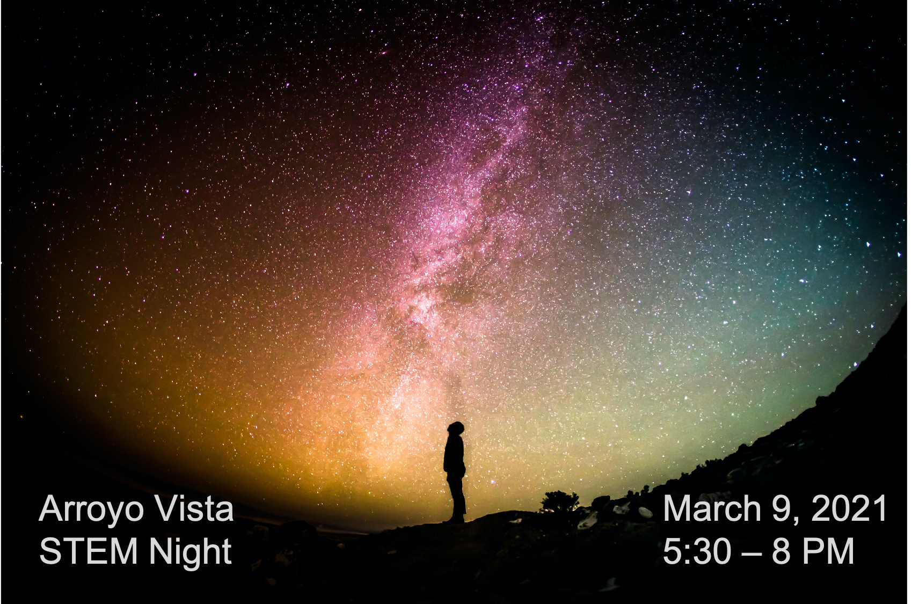
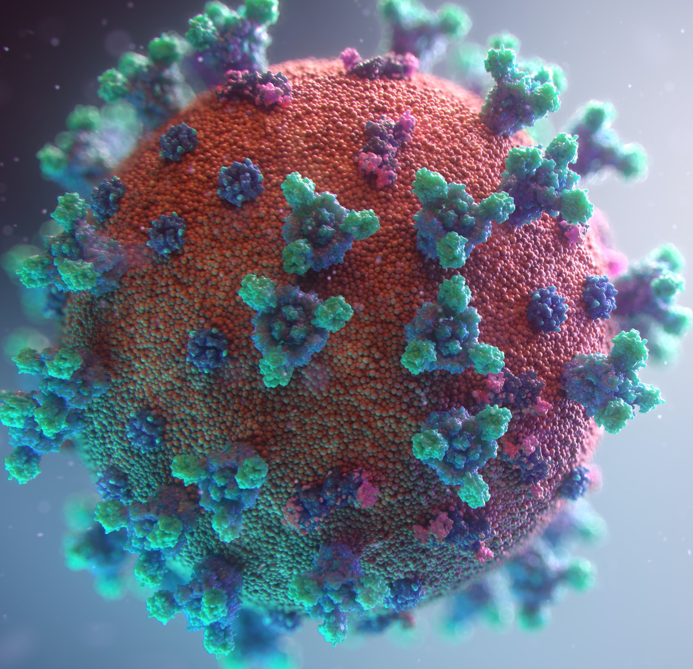
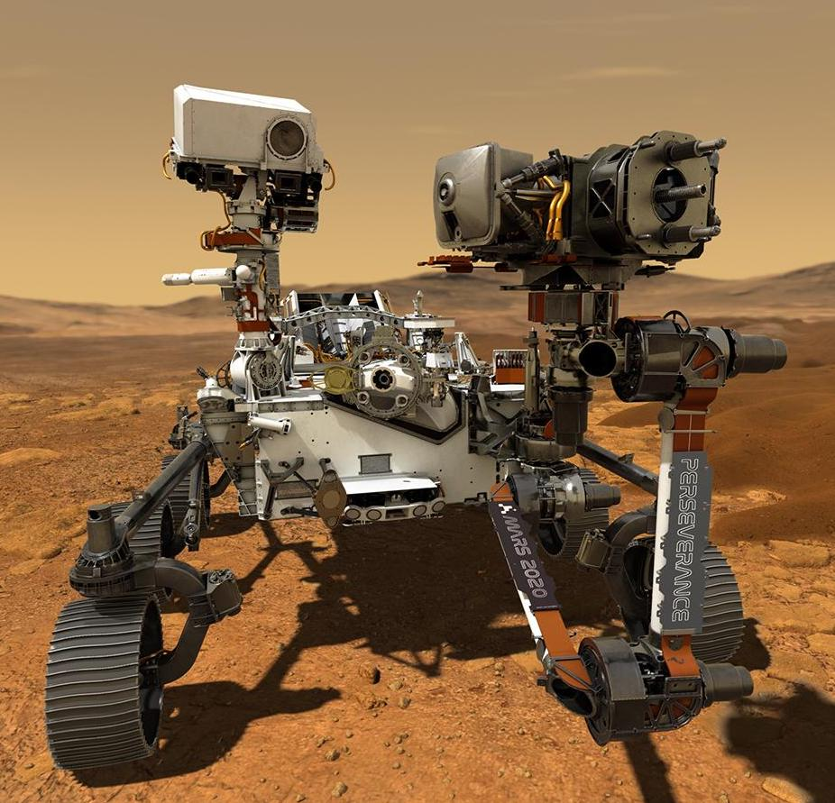

Enjoy family friendly talks and demonstrations about science and engineering! We’ll be joined by a number of speakers from Caltech, JPL, and Carnegie Observatories, who will tell us about the exciting work they do. Join for all of the talks, or pick and choose from the schedule. We look forward to learning with you!
Presentations
Carnegie Science

ISS Above

TMT

Biological Imaging

Chemistry

Immune Systems

Mars Rover

Schedule
Subject to change
5:00 - Presenter check-in 5:30 - Welcome! 5:40 - Carnegie Observatories 6:00 - Chemistry 6:20 - ISS Above 6:40 - Biological Imaging 7:00 - Mars Rover 7:20 - Immune System 7:40 - Thirty Meter Telescope
Connect
Connect from your home on Zoom. A link to register for the event will be e-mailed to Arroyo Vista families. Please contact your student's room parent with any questions.
International Space Station
On March 9th the International Space Station will be passing by Arroyo Vista Elementary EIGHT TIMES. It travels at the astounding speed of 17,000 mph (about 5 miles every second) 260 miles above the earth in space. Right now it is home to SEVEN astronauts who live and work up there. Liam will take all the students on a virtual tour of the International Space Station and if the timing works out – he will share some LIVE views of the earth from the ISS during the talk. Do you have any questions about what it’s like to live/work in space? This would be a good time to ask them!

Presented by Arroyo Vista PTA. Photos by Greg Rakozy and Fusion Medical Animation on Unsplash, and NASA/JPL-Caltech
Share: http://tiny.cc/avstem2021